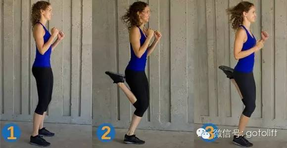

当你经历过了大半年的伏案学习，整天早六晚九的复习生活让你的生活变得单调，不知不觉中也感受到身体由于高强度的学习变得比较不适，可能表现的最直接的就是这样
好吧，不是这样，但是身体会感到不适，比较劳累，比较容易生病。

人的身体是个神奇的东西，用进废退，虽然不会在这短短的几个月中退到什么程度，但是长期看书导致视力衰退，坐姿不正确加重颈椎腰椎受力，早起晚睡导致睡眠不足。。。这些还是比较容易体现的，希望你现在不是处于这样的状态中，如果没有也不要高兴，锻炼身体是对自己负责，早做早好。
你说了要考试结束后跑步，当然这是好事儿，\(^o^)/👍
跑步确实是一个比较划算的锻炼方式，基本没有场地限制，完全没有器械限制。
说跑步不能撒丫子就跑，这样的结果往往适得其反，轻者岔气抽筋，重者膝盖半月板磨完，阴天下雨膝盖疼痛，所以跑步前有必要知道一些事情。比如，拉伸、呼吸调节、防护措施、减少膝盖磨损等等这些。
下面就我所知道的一些东西给你说道说道。。。
拉伸？热身？傻傻分不清。。。
关于拉伸，第一点必须知道拉伸是为了热身。大冬天的，出门跑步，身体还处于一个比较凉的状态，肌肉温度就不会太高而且粘滞性比较高(就是比较僵硬)，跑步的时候腿部肌肉群要进行发力，要伸缩，特别是对于需要爆发力的运动—— 100米，不进行热身运动，肌肉突的受力，容易发生肌肉拉伤。
热身的目的是为了提高肌肉温度，进而降低在运动中受伤的几率。
拉伸只是跑步前热身的一种方式，同样的还有低速跑步，简单的台阶运动(20公分高就行)，一套广播体操都可以，只要让身体热起来就行。当然了，如果你是从温暖的房间出来运动，身体不是太凉，也要进行热身一下，降低肌肉的粘滞性(让肌肉更有弹性，更Q)。
还记得大一的太极拳老师每次开始上课前都让我们做游戏么，当然玩是一方面，我觉得还是为了热身，还有一点，这样他的教学时间就少了，工作立马轻松了好多😹
拉伸的话，用当下跑步圈的说法— —跑前要拉伸，跑后要拉伸。再说一下，拉伸的目的是为了将沉睡的身体唤醒，把肌肉变得热起来，减少运动中的受伤风险。
但是我的建议是运动前热身(以慢跑为主，轻微拉伸辅助)，运动后拉伸，运动过后针对运动部位进行拉伸，跑步之后拉伸小腿，大腿和肩膀等部位。
那怎么热身呢？
你确定介是拉伸不四瑜伽？😤
原地开合跳，不用太快。
原地后抬腿
原地高抬腿
然后再慢跑个3、4分钟大概一圈就可以了。
然后是跑步之后的拉伸，有助于放松身体，缓解刚刚亢奋的身体，改善血液循环。拉伸，一般我做的都是静态拉伸，这样的做法能够减少强度过大照成的拉伤危险，静态拉伸，在有拉伸感即可，保持正确的姿势15s-25s左右。
大腿拉伸，主要拉伸大腿后群肌肉
另一种腿部拉伸，一般女孩子都可以轻松完成的吧😓
如果能够站的住，这也可以拉伸腿部肌肉，保持身体平衡、静止，站不住也没关系，扶着东西
小腿拉伸
这个也是拉伸腿部的
腹肌拉伸，跑步的时候会较多的用到核心区保持身体的平衡。也可以不用手掌撑地，使用手肘撑地，减少腰椎的受力，脖子不要往后仰，正常就行。
肱三头肌肉拉伸，三头是和二头对称的肌肉，一般不太用得到
肩膀的拉伸，最生动了😂
当然也可以这样，手拉着门或者任何可以抓的东西，站直了，稍稍感受到肩膀有拉伸感就行，简单的英文应该不成问题吧
背部肌肉的拉伸
跑步时间，早晚都要跑，那要早还是晚嘞😩
跑步是选择早上进行晨跑还是晚上进行夜跑呢？这真的是一个问题，早上跑和晚上跑各有各的优缺点。
早上跑有时间，毕竟一天刚开始，有大把的时间，晚上难保不出去玩，抽不出时间；早上跑起不来，起得来身体也比较凉，就算身体比较热，冬天有很大几率的天气是有雾的，空气质量不好，晚上身体温度高，肌肉粘滞性小，运动风险比较小，不容易发生肌肉拉伤，看了热身应该就知道这个理儿了；早上跑步可以激发一个人一天的正能量，运动完整个人都是积极阳光的，晚上跑步比较危险，灯光暗，一个姑娘不安全，去专门的跑道操场还好如果是路跑车辆也是一个威胁。。。
说了这么多废话，我建议的是选择一个自己觉得合适的时间用来跑步，如果觉得每天早上起得来，那就早上跑步，如果觉得晚上跑步可以让喧闹的一天沉静下来，那就晚上，最主要的是坚持！！！
我在学校的时候也就早上有时间去跑步，每天早上起床跑步半个多小时，绕操场或者跑龙源湖，但是在郑州工作的时候都是选择在晚上下班之后跑步。这个就看个人的时间与生活规律了，不能为了跑步扰乱了自己的生活，跑步也就是日常生活的一个调剂，在有时间的时候进行跑步，没时间了还跑什么=.=！
空腹训练，跑完好好吃饭
如果你选择是早上起来跑步，那就遇到一个问题，早上吃饭之后再去跑？别，千万别！
因为吃完饭跑步，一般人是不会这么干的，跑十分钟就肚子疼了。
当然这里不是说不能吃完饭跑步，只是说一下，空腹跑步会比饱腹跑步好一点。
空腹跑步可以加速脂肪燃烧，也就是减肥啦😜，同时会对肌肉有一定的消耗，你也不需要太多的肌肉，尽管消耗吧，当然了也不会消耗太多😄
不用担心低血糖，早上胰高血糖素浓度还是比较高的，胰高血糖素做什么用的还知道么，但是一定要注意补充水分，早起一杯水。如果真的非常饥饿，又有低血糖史，还是进行一些碳水化合物的补充再进行跑步吧。话说我高中军训的时候第一天就晕菜了，以后每天都是上学前吃超多，喝好多鸡蛋水，然而，还是站不了10分钟军姿就又去休息了。
如果早上空气质量不好什么的，就翻个身睡觉吧，跑什么步啊，睡觉(～﹃～)~zZ
跑步伤膝盖？算了，还是不跑了。。。
是的，跑步伤膝盖😠
膝盖损伤属于劳损，长期跑步对膝盖的使用，以及不正确的运动方式更加加速膝盖的损伤。跑步又是一个长时间、单一动作、持续冲击的运动，所以发生膝关节损伤的几率还是比较高的。但是，有一点，平常的走路也是会对膝盖有磨损的😱
膝盖损伤大概有韧带拉伤和软骨损伤。
韧带好理解，由于腿是由小腿(胫骨)和大腿(股骨)组成的，中间是膝盖链接，靠的是里面的韧带，跑步和走路但凡用到腿的动作都是要用韧带控制完成的。突地发力就会把韧带拉满，用力过了就会爆掉，韧带就撕裂了。
软骨这东西，吃过脆骨吧，或者鸡腿靠近骨头那一段又软又脆的骨头，这就是了。软骨损伤有髌骨软化(孙膑直接就没了😱)和半月板撕裂。
髌骨就是膝盖骨，保护膝关节，避免腿骨之间的磨损的，但是这个东西在不正确的运动中经过大量的磨损(虽然他是避免磨损的，但他还是不可避免的受到了磨损😓)，然后他就软化了。
半月板是垫在大腿骨和小腿骨之间的”垫子“，既然都垫子了，就是缓冲用的，避免膝关节扭动时候过量，锁住它，不让膝关节过度的扭动，但是一旦过度的扭动，半月板就撕裂了，膝盖也就受伤了。
篮球运动员受伤的一些比较多的名词中就有十字韧带拉伤，半月板撕裂，都是因为高强度运动照成的膝盖损伤。
说了这么多，是不是害怕了。
但是，不能因噎废食！
上面说的膝关节损伤都是在不正确的运动下有较大的几率发生的，只要有一个科学的运动理念以及正确的运动方式还是可以有效的避免运动伤害的。要是运动一下就受伤了，那还推广什么全民健身呢😂
概念结合实际跑步的预防:
- 运动前充分热身，全身以及各关节部位的热身、拉伸都不能马虎
- 运动结束后的放松拉伸，主要还是静态的拉伸以及伸展，对肌肉进行放松
- 正确判断肌肉的疲劳程度，运动疲劳的情况下不要运动，避免这阶段高概率运动伤害的发生
- 按摩，这个对于疲劳期的身体来说是最好的缓解手段
- 做好基础力量的训练，只有腿部肌肉力量大了，才能保护好膝关节，不要想着要马甲线就一直练腹肌，结合着其他肌肉群体训练，增加整体力量才是王道
- 有目的的运动，循序渐进，运动量要逐步上升，不能急切，更不要有报复性运动(就是说，昨天没跑步，今天多跑点儿，把昨天的跑过来，不要，没跑就没跑吧)
- 要有运动安全意识
然后，最实际的预防就是买一个护膝，护具可以降低受伤的几率，还要注意这个东西，在冬天绝对是利器，保暖又护膝😄
服装，禁锢了双腿
我记得最后一次体能测试跑800m的时候，你穿的是一个白色的牛仔裤吧😜，这样的装束在跑步时候是绝对不行的😤，容易增加运动的风险，应该穿宽松的衣裤进行体育锻炼。
运动的服装，鞋是必须要轻便的，保护脚掌，减少足步损伤，不能穿个帆布鞋就去跑步吧，这个买一双舒适不硌脚的就好。女孩子的话，运动内衣也是必须的，啥，你不知道啥是运动内衣😱，来来来，我给你讲讲(说的好像我很懂似的😓)
其实我真的不是太懂😁 看这个专栏 以及这个问题 应该会有帮助。
跑步的心率，找到自己的心跳。
跑步首先是一项有氧运动，在你大喘着粗气以近似于百米冲刺的速度结束今天的5Km跑步，累吧。有氧运动的界限有很多的标准，比较好使的一个就是，心率。
心率是指心脏每分钟的跳动次数，用来判断训练强度和体能消耗是成本最低的一种了，虽然和专业的一起测量比起来会有些许差别，但是对简单的跑步来说，使用心率判断训练强度再好不过。
心率知道了有什么用呢，用来比较啊，和谁比较呢，最大心率
最大心率有几种计算方法
MAX = 220-年龄MAX = 208-0.7*年龄MAX = 200-0.5*年龄
当然最准确的是去医院或者体检机构去测算，但是对于一个健康的你来说，使用第二个MAX = 208-0.7*年龄就可以了，出入不会太离谱。
现在知道最大心率了，那就说一下比较的标准，在最大心率的90%（90%MAX）下，运动强度和心率是呈线性增长比例的，所以通过心率可以直观的反映出运动强度。
适宜健康人群的中等强度运动心率是60-90%MAX，而有氧运动的最小强度是45%😓近似于走路。高心率(80-95%MAX)的训练近似于无氧运动，低心率(45-60%MAX)就是平常的有氧运动，所以介于这两者之间进行的有变化的间歇训练，对于减脂最有效(==，不是说跑步么😂怎么成减脂了)。
以一个操场为例，400m距离，前300使用比较低的心率(50-60%MAX)进行，最后一百米使用高心率(80-90%MAX)进行，并且进行高心率跑步的时候保证心率是平稳的高心率，不要有太大波动，交叉着进行有氧和无氧跑步，这就是简单的HIIT（高强度间歇有氧，在短时间内将高强度与低强度训练结合的健身方式）。
当然这个有可能不适用于你。
简单的可以这样判断一下心率水平：热身的时候使用同一种不是很困难的速度进行连续的三分钟，然后休息个10秒，测一下心率水平，就能知道自己在这个速度下达到了什么样的运动强度。
说到测心率，怎么测呢😥，掐指一算？
对，就是掐，但是是掐自己的手腕，算一下10秒内的心跳，然后乘以6就是自己的心率了，或者使用这样，把两个手指搭脖子上
但是这样的方式，你必须停下来测。要是想看自己运动中的心率，各个手环手表都有，这些工具除了记个步也没什么实际作用，还是掐手指比较划算。
我一般在学校跑步都是先拉伸十来分钟，然后热身跑一两圈，然后中速跑两圈，冲刺一圈，再中速2+冲刺1，中速1+冲刺1+慢速1(跑不动了😛，也是让身体缓冲一下)，最后就是再拉伸一下消消汗就结束了，前前后后一共下来也就半个小时多点儿。
当然对于你来说估计会强度太大，大概半圈快跑半圈慢跑就行，每天跑个20分钟的量应该没问题吧？
加油↖(^ω^)↗
最后，来碗鸡汤。。。